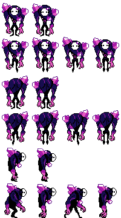
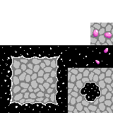
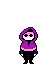

Technical Art
Bearly Enough - Scalable Character Customization
The problem
I wanted to create a game where you get to collect many diffrent bears, however I would have to create a large number of sprites. This is a problem as it would take alot of time to recolour and put these sprites into my game.
The solution
Instead brute forcing the assets, I Engineered a modular sprite system in Godot. I split the sprite into multiple technical layers using flat white textures. These would be recoloured through godot's modulate property via code which allows for infinite colour variations. To keep artwork dynamic and cohesive, I created a shader that acts as a multiply layer for more visual depth.

The result
This appoach allowed me to generate massive amounts of unique bears just by editing colour values through the code. By reusing a single set of base textures, I was also able to reduce the file size and texture memory usage.

Crystal Cave - Animated Sprites and Tilesets



This was made for a 2 day game jam. I worked closely with another artist who came up with character designs. I would then animate them using krita and get them game ready. I also worked on creating the tile set for this game. Check it out!